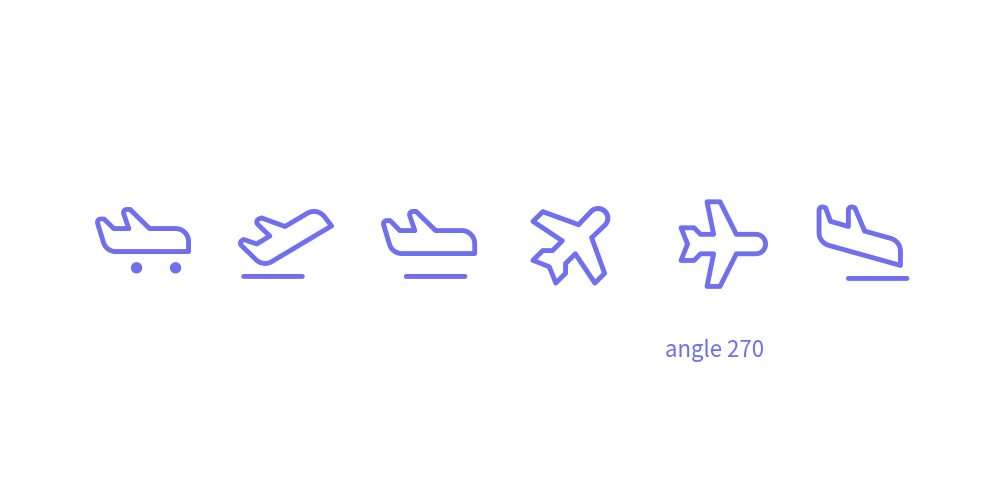
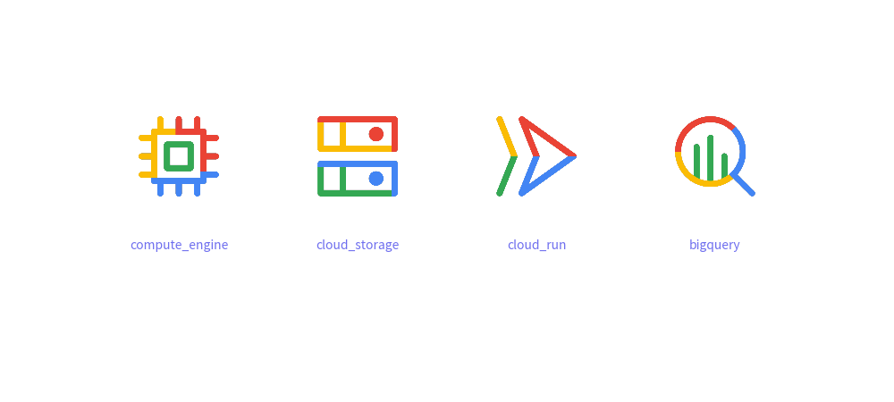
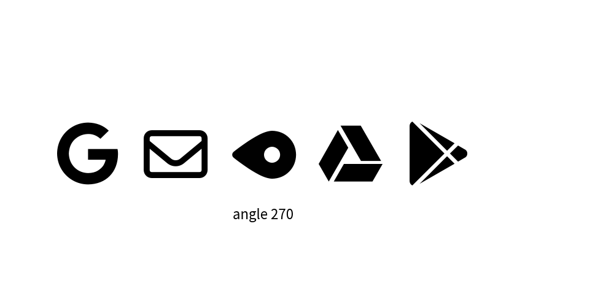
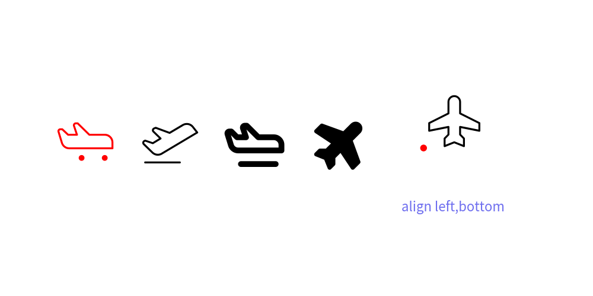
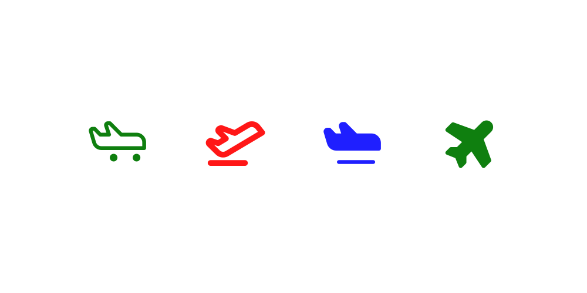

Drawing Icons
If you're looking to enhance your illustrations with icons, drawlib offers several methods to achieve this.
You can utilize the image() function by providing an icon image file of your choice.
Alternatively, you can use font_icon() along with dedicated Icon Modules for drawing icons directly.
Icon Modules
We've curated a selection of icons for your convenience, available in drawlib now:
phosphor: Derived from Phosphor Icons (https://phosphoricons.com). Provides ~1,500 vector font icons.gcp: Official Google Cloud Platform diagram and architecture icons. Provides 250+ full-color service and category icons.
Each icon within these modules is defined as a function, allowing you to draw specific icons by simply calling their respective function.
Phosphor Icons
Let's explore with examples using phosphor:
from drawlib.canvas import save, setup
from drawlib.icons import phosphor
from drawlib.text import text
from drawlib.config import styles
width = 100
height = 50
setup(width=width, height=height)
x = width / 7
y = height / 2
phosphor.airplane_taxiing(xy=(x, y), width=10, style=styles.primary)
phosphor.airplane_takeoff(xy=(x * 2, y), width=10, style=styles.primary)
phosphor.airplane_in_flight(xy=(x * 3, y), width=10, style=styles.primary)
phosphor.airplane_tilt(xy=(x * 4, y), width=10, style=styles.primary)
phosphor.airplane(xy=(x * 5, y), width=10, angle=270, style=styles.primary)
text(xy=(x * 5, y - 10), text="angle 270", style=styles.primary)
phosphor.airplane_landing(xy=(x * 6, y), width=10, style=styles.primary)
save()
All functions have these args.
xy: coordinatewidth: icon widthangle: angle 0.0~360.0style: Style object (e.g.,styles.primary)
Executing this code yields the following image:

phosphor's icons
You see lots of variation of only airplane.
phosphor has around 1,500 icons.
Google Cloud Platform Icons (gcp)
Drawlib provides official Google Cloud Platform diagram icons via drawlib.icons.gcp.
These icons are official high-resolution multi-color graphics representing GCP services and product categories, designed for clean and professional cloud architecture diagrams.
Basic Usage
Every GCP icon is defined as a function directly under gcp.
They accept standard coordinate, width, angle, and style arguments:
from drawlib.canvas import save, setup
from drawlib.icons import gcp
from drawlib.text import text
from drawlib.config import styles
width = 100
height = 45
setup(width=width, height=height)
x = width / 5
y = height / 2 + 5
gcp.compute_engine(xy=(x, y), width=10, style=styles.primary)
text(xy=(x, y - 10), text="compute_engine", size=10, style=styles.primary)
gcp.cloud_storage(xy=(x * 2, y), width=10, style=styles.primary)
text(xy=(x * 2, y - 10), text="cloud_storage", size=10, style=styles.primary)
gcp.cloud_run(xy=(x * 3, y), width=10, style=styles.primary)
text(xy=(x * 3, y - 10), text="cloud_run", size=10, style=styles.primary)
gcp.bigquery(xy=(x * 4, y), width=10, style=styles.primary)
text(xy=(x * 4, y - 10), text="bigquery", size=10, style=styles.primary)
save()
Executing this code generates the following image:
Common GCP service icons
Popular GCP services also provide common abbreviation aliases:
gcp.gcs->gcp.cloud_storagegcp.gke->gcp.google_kubernetes_enginegcp.gce->gcp.compute_enginegcp.bq->gcp.bigquery
Styling GCP Icons
Unlike font icons which render in monochrome by default, GCP icons render in their official full-color design on a transparent background.
You can customize them using drawlib.types.Style:
image_alpha: Controls transparency (from0.0for fully transparent to1.0for opaque).image_tint_color: Applies a solid silhouette mask over the icon artwork.image_border_color,image_border_width,image_border_style: Draws an optional border outline around the icon frame.
from drawlib.canvas import save, setup
from drawlib.colors import Colors
from drawlib.icons import gcp
from drawlib.text import text
from drawlib.config import styles
width = 100
height = 50
setup(width=width, height=height)
x = width / 5
y = height / 2 + 5
# 1. Default multi-color artwork
gcp.cloud_run(xy=(x, y), width=10, style=styles.primary)
text(xy=(x, y - 10), text="Default", size=10, style=styles.primary)
# 2. Angle rotation
gcp.cloud_run(xy=(x * 2, y), width=10, angle=45, style=styles.primary)
text(xy=(x * 2, y - 10), text="angle=45", size=10, style=styles.primary)
# 3. Alpha transparency
gcp.cloud_run(xy=(x * 3, y), width=10, style=styles.primary.patch(image_alpha=0.35))
text(xy=(x * 3, y - 10), text="image_alpha=0.35", size=10, style=styles.primary)
# 4. Color tint / silhouette mask
gcp.cloud_run(xy=(x * 4, y), width=10, style=styles.primary.patch(image_tint_color=Colors.Red))
text(xy=(x * 4, y - 10), text="image_tint_color=Red", size=10, style=styles.primary)
save()
Executing this code generates the following image:
GCP icon styling variations
Cloud Architecture Diagram Example
Here is an end-to-end example demonstrating how GCP icons can be combined with shapes and connectors to build clear architecture diagrams:
from drawlib.canvas import save, setup
from drawlib.colors import Colors
from drawlib.icons import gcp, phosphor
from drawlib.lines import line
from drawlib.shapes import rectangle
from drawlib.text import text
from drawlib.config import styles
setup(width=100, height=60)
# Cloud boundary
rectangle(
xy=(63, 30),
width=66,
height=50,
r=2,
style=styles.primary.patch(
shape_fill_color=Colors.White,
shape_line_color=Colors.Gray,
shape_line_style="dashed",
shape_line_width=1.5,
),
)
text(xy=(45, 51), text="Google Cloud Project", size=10, style=styles.primary.patch(text_color=Colors.Gray))
# Client / User
phosphor.user(xy=(14, 30), width=10, style=styles.primary)
text(xy=(14, 20), text="Client", size=9, style=styles.primary)
# Cloud Services
gcp.cloud_load_balancing(xy=(38, 30), width=10, style=styles.primary)
text(xy=(38, 20), text="Load Balancer", size=9, style=styles.primary)
gcp.cloud_run(xy=(62, 30), width=10, style=styles.primary)
text(xy=(62, 20), text="Cloud Run", size=9, style=styles.primary)
gcp.cloud_sql(xy=(86, 40), width=9, style=styles.primary)
text(xy=(86, 32), text="Cloud SQL", size=8, style=styles.primary)
gcp.cloud_storage(xy=(86, 20), width=9, style=styles.primary)
text(xy=(86, 12), text="Cloud Storage", size=8, style=styles.primary)
# Connectors
line(xy1=(20, 30), xy2=(32, 30), arrowhead="->", style=styles.primary)
line(xy1=(44, 30), xy2=(56, 30), arrowhead="->", style=styles.primary)
line(xy1=(68, 33), xy2=(80, 39), arrowhead="->", style=styles.primary)
line(xy1=(68, 27), xy2=(80, 21), arrowhead="->", style=styles.primary)
save()
Executing this code generates the following architecture diagram:

Sample GCP cloud architecture diagram
font_icon()
font_icon() is a versatile function for displaying font icons.
Internally, font icon modules utilize font_icon().
The function arguments are:
xy: Coordinates for positioning the icon.width: Width of the icon.code: Font code representing the icon.file: Font file used for rendering the icon.angle: Angle for rotating the icon (optional).style: Style object (required).
Let's explore its usage with FontAwesome Free:
from drawlib.canvas import save, setup
from drawlib.icons import font_icon
from drawlib.text import text
from drawlib.config import styles
width = 100
height = 50
setup(width=width, height=height)
file_brand = "../_assets/fontawesome-free/brands.ttf"
file_regular = "../_assets/fontawesome-free/regular.ttf"
file_solid = "../_assets/fontawesome-free/solid.ttf"
google = "\uf1a0"
gmail = "\uf0e0"
google_map = "\uf3c5"
google_drive = "\uf3aa"
google_play = "\uf3ab"
google_pay = "\ue079"
x = width / 7
y = height / 2
font_icon(xy=(x, y), width=10, code=google, file=file_brand, style=styles.primary)
font_icon(xy=(x * 2, y), width=10, code=gmail, file=file_regular, style=styles.primary)
font_icon(xy=(x * 3, y), width=10, code=google_map, file=file_solid, angle=270, style=styles.primary)
text(xy=(x * 3, y - 10), text="angle 270", style=styles.primary)
font_icon(
xy=(x * 4, y),
width=10,
code=google_drive,
file=file_brand,
style=styles.primary,
)
font_icon(
xy=(x * 5, y),
width=10,
code=google_play,
file=file_brand,
style=styles.primary,
)
save()
Executing this code generates the following image:

FontAwesome-Free icons
While FontAwesome is widely recognized, its full usage requires a commercial license. The free version may lack variation and style consistency. Therefore, drawlib does not currently provide an icon module for it.
Style for Icons
Similar to other drawing elements, the appearance of icons can be customized using the Style class, which allows you to control:
Style encompasses these icon-related attributes:
icon_style: Icon style, supports"thin","light","regular","bold", or"fill". The availability of styles depends on the icon modules.icon_color: Icon color, specified in RGB (0~255, 0~255, 0~255) or RGBA (0~255, 0~255, 0~255, 0.0~1.0). You can utilize helpers likeColorsandColors140.
Let's illustrate this with an example:
from drawlib.canvas import save, setup
from drawlib.colors import Colors
from drawlib.icons import phosphor
from drawlib.text import text
from drawlib.config import styles
width = 100
height = 50
setup(width=width, height=height)
x = width / 6
y = height / 2
phosphor.airplane_taxiing(xy=(x, y), width=10, style=styles.primary.patch(icon_color=Colors.Red))
text(xy=(x, y - 10), text="Red", style=styles.primary)
phosphor.airplane_takeoff(xy=(x * 2, y), width=10, style=styles.primary.patch(icon_style="thin"))
text(xy=(x * 2, y - 10), text="thin", style=styles.primary)
phosphor.airplane_in_flight(xy=(x * 3, y), width=10, style=styles.primary.patch(icon_style="bold"))
text(xy=(x * 3, y - 10), text="bold", style=styles.primary)
phosphor.airplane_tilt(xy=(x * 4, y), width=10, style=styles.primary.patch(icon_style="fill"))
text(xy=(x * 4, y - 10), text="fill", style=styles.primary)
phosphor.airplane(xy=(x * 5, y), width=10, style=styles.primary.patch(icon_color=Colors.Blue, icon_style="bold"))
text(xy=(x * 5, y - 10), text="Blue bold", style=styles.primary)
save()
Executing this code generates the following image:

icons with Style.
Pre-defined icon styles
Drawlib's preset styles provide pre-defined icon styles on the styles object.
Here is an example:
from drawlib.canvas import save, setup
from drawlib.icons import phosphor
from drawlib.config import styles
width = 100
height = 50
setup(width=width, height=height)
x = width / 5
y = height / 2
phosphor.airplane_taxiing(xy=(x, y), width=10, style=styles.green)
phosphor.airplane_takeoff(xy=(x * 2, y), width=10, style=styles.red_bold)
phosphor.airplane_in_flight(xy=(x * 3, y), width=10, style=styles.blue_flat)
phosphor.airplane_tilt(xy=(x * 4, y), width=10, style=styles.green_flat)
save()
Executing this code generates the following image:

icon with preset style
© 2026 drawlib by Yuichi Ito. Released under the Apache 2.0 License.